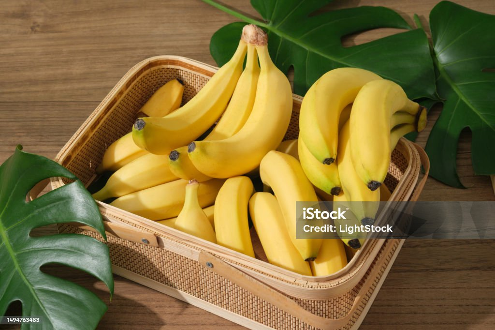

Bananas are among the most popular and widely consumed fruits in the world, valued for their sweet
flavor, soft texture, and natural convenience. They are believed to have originated in the tropical
regions of Southeast Asia, particularly in areas that include present-day Malaysia, Indonesia, and
the Philippines. From there, bananas spread to India, where they became an important fruit in both
diet and culture. Ancient trade routes later carried bananas to Africa, and eventually the fruit
reached the Americas through early explorers and traders. Today, bananas are grown in many tropical
and subtropical countries, with India being one of the largest producers globally. Nutritionally,
bananas offer an impressive range of benefits. They are rich in potassium, which supports heart
health and helps maintain proper muscle function. Bananas also contain vitamin B6, which aids in
brain development and boosts metabolism, as well as vitamin C, which strengthens immunity. Their
natural dietary fiber supports healthy digestion and helps maintain steady energy levels. Because
they provide natural sugars like glucose and fructose, bananas are an excellent source of quick
energy for athletes, students, and anyone needing a healthy snack. Their combination of taste,
accessibility, and nourishment makes bananas a universally loved fruit.